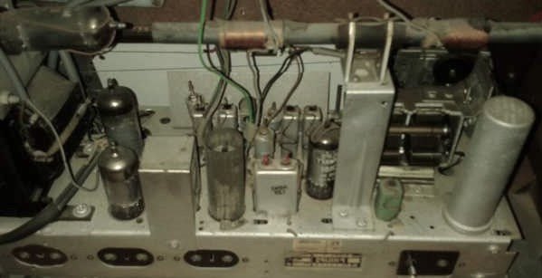
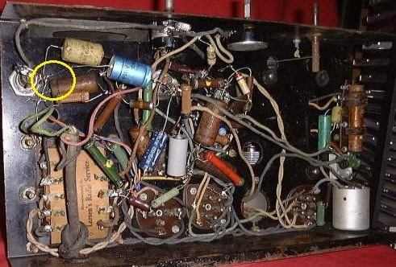
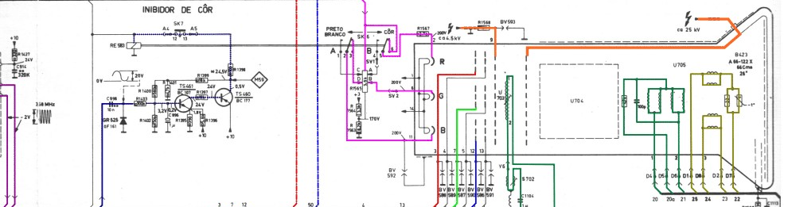
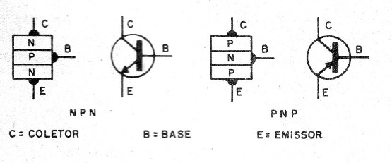

Historia
Voce que busca conhecimento em eletronica nessa era atual deve ter profundo interesse nas origens dos circuitos, pois hoje encontra-se tudo praticamente pronto, com o minimo de conhecimento possivel voce pode encontrar circuitos prontos, ferramentas para teste de circuito e muito mais, facilitando sempre a vida dos atuais sedentos de conhecimento em eletronica.
Antigamente
Nos anos 80 e 90 a coisa nao era tao facil assim, Os circuitos tinham uma chassis de ferro e toda sua montagem era feita de forma artesanal e as conexoes entre os componentes feita por fiacao, veja essa ilustracao:
Imagem de Eletronica-pt.com
Imagem de PauloBrits.com.br
Quando se quer aprender eletronica temos que entender precisamente cada componente, seu funcinamento sua posicao dentro do circuito e sua funcao.
Depois a leitura de diagramas e circuitos
Depois aprender a testar cada um, entender sobre polaridades, no caso de capacitores e diodos, tambem o que e onde se posiciona a base o coletor e o emissor no caso de transistores.
Para circuitos integrados a coisa fica complexa.